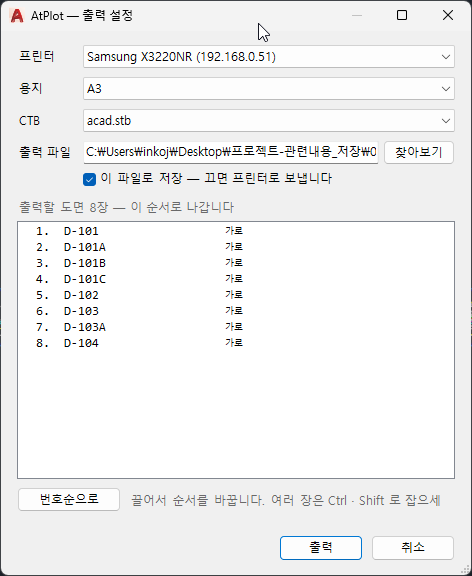

Plots several sheets laid out in one drawing in a single run, instead of framing and printing each one
by hand. Sheets can go straight to a printer or be collected into one PDF file.
Two things must be in place first
A sheet without these does not appear in the list.
Required
Description
WS-PLOT boundary polyline
Each sheet must be framed by a polyline on the WS-PLOT layer.
AtPlot finds these polylines and counts each one as one sheet. Anything without one is not plotted.
Drawing name
Each sheet needs its name (drawing number) text. That name is what the list and the
saved file use; without it a sheet cannot be told apart.
Placing a title block with SFB and FFB supplies both — FFB copies the
boundary polyline along with the form and fills in the drawing number. A drawing prepared with FFB is
therefore ready for AtPlot as it stands.
How to use
Check that every sheet has its WS-PLOT boundary polyline and its drawing name.
Type AtPlot in the command line and press Enter.
In the AtPlot — plot settings dialog choose the printer, paper size and CTB.
Check the order of the listed sheets and drag to change it if needed.
Press Plot.
The plot settings dialog

The sheets found are listed in the order they will be plotted, numbered, with each sheet's
landscape / portrait orientation on the right.
Field
Description
Printer
The printer to plot through. Its settings are used for file output as well.
Paper
Paper size (A3 and so on).
CTB
Plot style table (acad.stb and so on) — it decides line weights and color translation.
Output file
Path used when collecting the sheets into a file. Browse opens a file picker.
Save to this file
On: every sheet goes into one file at that path.
Off: the sheets go straight to the printer.
Sheet list
The sheets found, numbered in plotting order. The count is shown above the list.
Landscape / portrait
The paper orientation taken from the shape of each boundary polyline.
Changing the order
Action
Description
Drag
Drag a row to the position you want.
Several at once
Ctrl picks scattered rows, Shift picks a run of them; they move together.
Sort by number
Orders the whole list by the number in the drawing name.
The order shown is the plotting order. When collecting into one file it is also the page order.
Environment
AutoCAD / BricsCAD only (not available in Rhino).
Related commands
Command
Description
SFB
Selects the company title block. The form must contain the boundary polyline and the drawing-number text.
FFB
Inserts the selected form, copying the boundary polyline with it and filling in the drawing number.